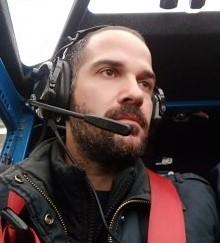

Giorgos Laliotis

Personal info
Preview
My passion is problem solving and new technologies.
I have loads of experience in customer support 24/7, also
in managing and coordinating people in order to get the best out of them.
Education
Graduate student in the Department of Automation, School Technological Applications,
Educational Institute (TEI) of Chalkis
Profesional Experience
Network administrator - Store Manager
(PoP Internet Cafe, one of the first Internet Stations in Evia Greece)
2003-2005
Head of Networks & Enterprise Customers
(Microchip Evian EPE.The largest IT company in Evia Greece)
2005-2007
- Customer training
- Training of new techniques
- Technical coverage bank-corporate customers-Public Organizations customers
- Design-Installation-Economic Study-Support Internet Cafes - Events (DTE digital technology expo 2010)
Head of the Technical Department
(CNS (computers & network solutions) .IT Company in Evia Greece with main preoccupation, networks-leased circuits, Internet-Internet cafes-Development and Web pages Management)
2007-2009
- Technical support of clients 24/7 throughout Greece
- Training and technical oversight
- Design-Construction of building public-private sector
- Create new client list
Co-owner-Co-founder
(HIVE Networks. Structure and support Internet Cafes-Networks)
2009-2017
- Technical support of clients 24/7 throughout Greece
- Create new client list
- Economic management
- Construction of custom applications serving the needs of each customer
Coffee Machine Technician - Network Engineer
(Intertan SA One of the largest trading companies in Greece.)
2017-2021
- CCTV cameras installation
- Alarm systems installation
- Network installation and management
- Coffee machines repair-installation-support
- 24/7 customer service
- 24/7 company support-troubleshooting
- Training operators on precise operation and maintenance
Head of Technical department
(Intertan SA One of the largest trading companies in Greece.)
2021-Present
- Coordination of three technicians in eight regions all over Greece
- Technical Department Budget Management
- On Call Support on customers and technicians
Continuous Education
Cisco CCNA
2010
- Study and practice theory and taking examinations and certifications from CISCO company
- VOIP
2007
- Installation-Configuration and Support Voip Voice Through web
- SQL SERVER
2005
- Installation-Configuration and Database support
Foreign Languages
- English: First Certificate in English Cambridge University-Preperation for C2 Proficiency of Cambridge
- French: Diplome D'etudes en langue Francaise (DELF) 1er Degre
- Greek: Native Language
Other